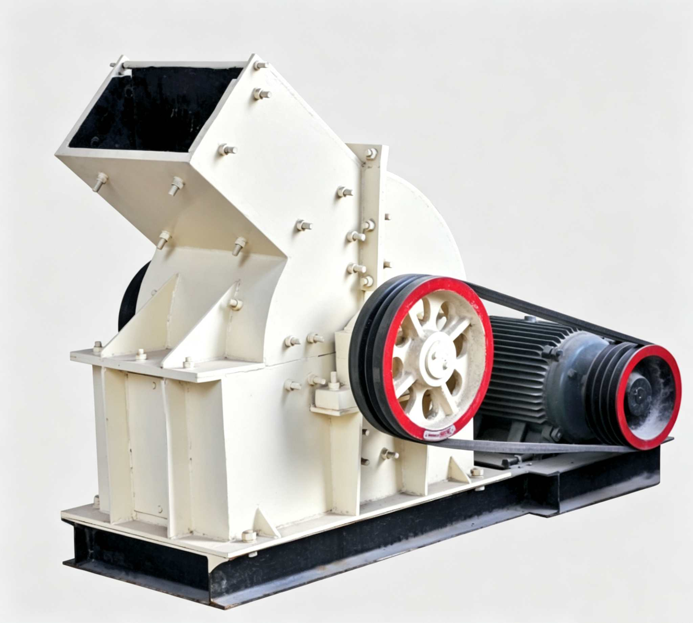

Hammer Crusher uses high-speed rotating hammer impact to crush materials. Simple structure, high crushing efficiency, large crushing ratio, uniform product particle size. It is one of the mainstream equipment for fine crushing limestone, coal or other brittle materials below medium hardness in metallurgy, building materials, chemical and hydropower industries. PC Series covers small to medium-large, suitable for raw material crushing in small factories, brick plants, refractory material plants, etc.

Hammer Crusher (PC Series) uses high-speed rotating hammer heads on the rotor to impact materials. The motor drives the rotor via V-belts at high speed (hammer tip speed up to 25-50 m/s). Hammers hinged on the rotor disc spread radially under centrifugal force, striking feed material with extremely high kinetic energy. After impact breakage, material flies at high speed toward impact plates and grate bars inside the crushing chamber, where it undergoes further grinding and extrusion until particle size is smaller than grate slot width and discharges. Hammer Crusher features a large single-stage crushing ratio (up to 15-30), capable of reducing 100-400mm feed to <15mm in one pass without multi-stage crushing — the core equipment for the "more crushing, less grinding" energy-saving process route. PC Series ranges from small PC200×300 (2-4 t/h) to medium PC800×1000 (20-75 t/h), with 6 models covering medium-fine crushing needs for laboratories, brick plants, cement plants, chemical plants and various scales.
The motor drives the rotor at 800-1500 rpm via V-belts. Hammers hinged on the rotor disc fully extend under centrifugal force. Material falls from the upper feed opening and is struck by high-speed (25-50 m/s tip speed) rotating hammers, instantly fragmenting.
Material rebounds off impact plates for secondary crushing. Oversize is repeatedly compressed and ground between hammers and grate bars.
An arc-shaped grate screen (slot width 5-15mm) is installed at the bottom of the crushing chamber, serving dual screening and grinding functions. Material smaller than the grate slots passes through, while larger material continues to be struck and ground by hammers until all passes through. Discharge size can be adjusted by replacing grates with different slot widths.
| Model | Hammers | Feed Size (mm) | Discharge Size (mm) | Capacity (t/h) | Motor Power (kW) | Weight (t) |
|---|---|---|---|---|---|---|
| PC200×300 | 9 | <100 | <15 | 2-4 | 4P-5.5 | 0.5 |
| PC400×300 | 16 | <100 | <15 | 5-7 | 4P-11 | 0.8 |
| PC350×500 | 20 | <100 | <15 | 8-15 | 4P-15 | 1.2 |
| PC600×400 | 20 | <220 | <15 | 10-25 | 4P-22 | 1.5 |
| PC800×600 | 24 | <350 | <15 | 20-50 | 4P-55 | 3.8 |
| PC800×1000 | 28 | <400 | <15 | 20-75 | 4P-95 | 5.5 |
※ Based on limestone (compressive strength ≤120MPa), discharge size <15mm (adjustable by changing grate gap). Output varies with material hardness and moisture content. Technical data subject to change without notice.
| Component | Function | Material / Features |
|---|---|---|
| Rotor Disc & Main Shaft | Composed of multiple layers of circular rotor discs mounted on the main shaft, each layer with evenly distributed pin holes around the circumference for hinging hammers. Rotor is dynamically balanced for smooth high-speed operation. Main shaft supported by double-row spherical roller bearings at both ends | 45# Steel Main Shaft + Q345B Rotor Disc |
| Hammer (Blow Bar) | Core wear part of hammer crusher, hinged on rotor disc via pins. Spreads radially under centrifugal force during high-speed rotation, striking material with high kinetic energy. Hammers reversible for double-sided use, fully utilizing wear allowance at both ends | High manganese steel ZGMn13 / High chromium cast iron |
| Impact Plate (Liner) | Wear-resistant liner installed on crushing chamber inner wall, bearing high-speed impact of material flung by hammers, providing secondary crushing and chamber wall protection. Surface can have cast strip or wave-shaped wear-resistant teeth. | ZGMn13 High Manganese Steel Liner |
| Grate Screen (Grate Set) | Arc-shaped grid assembly at the bottom of the crushing chamber, consisting of dozens of grate bars arranged at fixed intervals. Serves dual screening and grinding functions — qualified material discharges through grate slots, unqualified material continues being ground by hammers. Discharge size adjustable by replacing grates with different slot sizes. | ZGMn13 / Wear-resistant Cast Steel |
| Crushing Chamber Shell | Split upper/lower steel plate welded shell, bearing material impact and airflow pressure from high-speed hammer rotation. Feed port at top, discharge opening at bottom. Side maintenance door for convenient hammer and grate replacement. | Q345B Steel Plate Welded |
| Drive and Frame | Electric motor drives the rotor via V-belts. Frame is a steel welded base, mounted on vibration pads or concrete foundation. Small models with direct motor drive, medium-large models with hydraulic coupler soft start. | 4P Motor + V-belt / Coupler |
Can crush 100-400mm large material to <15mm in one pass, with single-stage crushing ratio up to 15-30. For medium-soft materials like limestone, PC800×600 can replace the "jaw crusher + impact crusher" two-stage process, saving one machine and one conveyor section.
The whole machine consists of four parts: rotor + hammers + grates + shell, with no complex transmission or hydraulic systems. Hammers are suspended via pins — just remove the pin for quick replacement. Grates can be individually extracted through the side maintenance door.
By replacing grate screen sets with different slot sizes (5-15mm), the discharge size upper limit can be flexibly adjusted. The same machine can produce 0-5mm fine powder or 5-15mm coarse sand under different conditions, meeting various downstream process needs.
High energy utilization efficiency of hammer impact crushing, with power consumption only 1-2.5 kWh per ton. PC800×1000 with 95kW installed power achieves 75 t/h capacity, far lower than the jaw crusher + impact crusher combination at the same capacity.
High-speed hammer rotation generates strong airflow that quickly blows high-moisture sticky materials (wet limestone, clay) through grates without clogging. This makes the hammer crusher superior to jaw and roller crushers under rainy and wet material conditions.
PC200×300 (0.5t) suitable for laboratories and micro brick plants, PC800×1000 (5.5t) suitable for small-medium quarries and cement plants. 6 models cover the full 2-75 t/h capacity range with low investment threshold, suitable for users of all scales.
Cement plants use the hammer crusher to reduce 200-350mm quarry limestone to <15mm in one pass, directly feeding the raw mill. Single-stage hammer crusher replaces "jaw+impact crusher", reducing investment and operating costs — standard for small-medium cement lines.
The hammer crusher is the main fine crushing equipment before coal washing, reducing 100-300mm raw coal to <15mm before washing. In coking plants, it fine-crushes coking coal to <3mm, meeting stamp-charged coke furnace feed requirements.
Small PC200×300 and PC400×300 are standard crushing equipment in brick plants and refractory plants, crushing shale, coal gangue, clay and other raw materials to <5mm for direct brick making. Compact equipment, low investment, suitable for local raw material processing in township small factories.
The chemical industry uses the hammer crusher to fine-crush phosphate rock, gypsum and potassium salt. The metallurgical industry uses it for crushing sinter and limestone flux, providing qualified-size materials for blast furnaces and sintering machines.
Need Hammer Crusher? Contact us for selection advice and quote